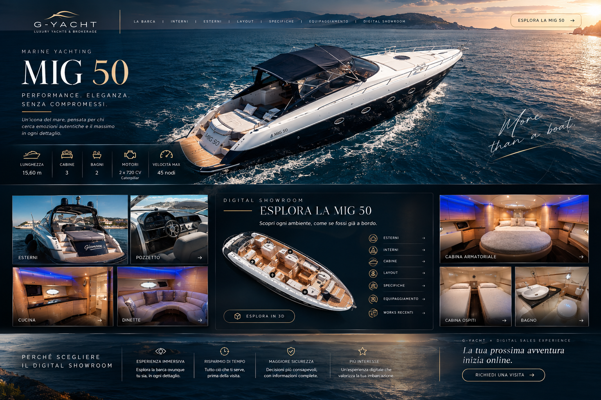

Hero & posizionamento
La barca viene introdotta con una scena forte, pochi messaggi e un percorso di navigazione immediato.
CASE STUDY · CONCEPT
Un esempio progettuale di come trasformare la presentazione di una singola imbarcazione in un'esperienza digitale di vendita.
CONCEPT · NON COMMISSIONATOL'IDEA
Abbiamo immaginato per la MIG 50 un Digital Showroom capace di unire impatto visivo, informazioni, esplorazione e contatto in un unico percorso.
L'obiettivo del concept non è sostituire gli strumenti di vendita esistenti, ma aggiungere un livello digitale che renda più ricca e ordinata la fase che precede la visita.
THE DIGITAL SHOWROOM

COME POTREBBE FUNZIONARE
La barca viene introdotta con una scena forte, pochi messaggi e un percorso di navigazione immediato.
Ambientazioni, esterni e dettagli vengono organizzati per far comprendere l'imbarcazione senza confusione.
Dati tecnici e dotazioni entrano nel percorso come contenuti di supporto alla decisione.
360°, video o modelli 3D possono diventare moduli dedicati quando il materiale è disponibile.
Il percorso termina con un invito all'azione semplice: informazioni, appuntamento o visita.
La stessa architettura può essere adattata a nuove imbarcazioni, mantenendo coerenza di brand.
NOTA DI TRASPARENZA
G-YACHT × MIG 50 è presentato esclusivamente come esempio progettuale. Non implica una collaborazione, un incarico o un'approvazione da parte di G-YACHT.
HAI UNA BARCA DA PRESENTARE?